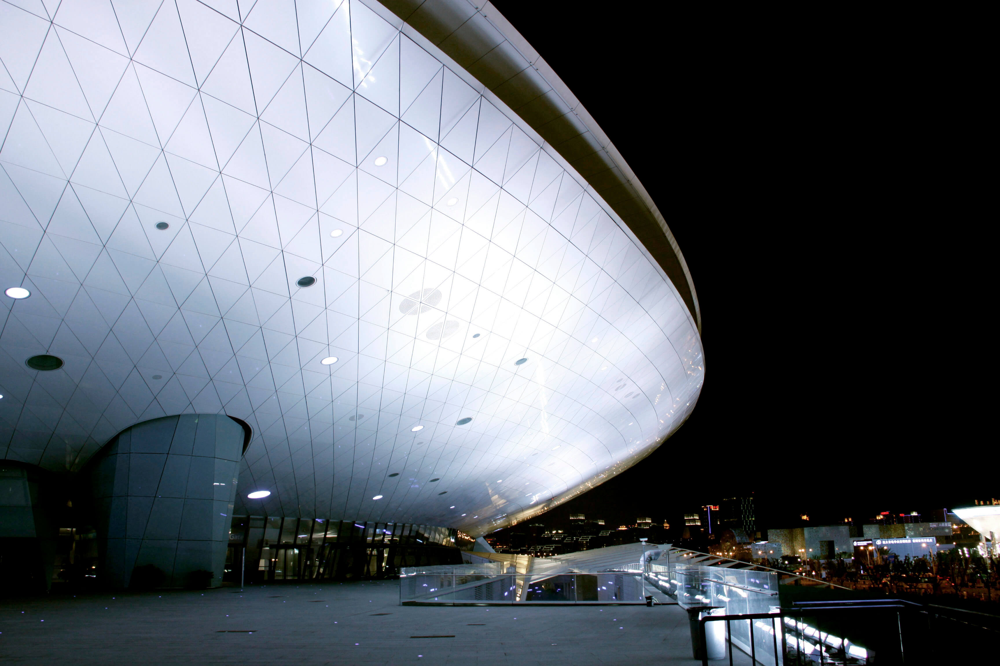
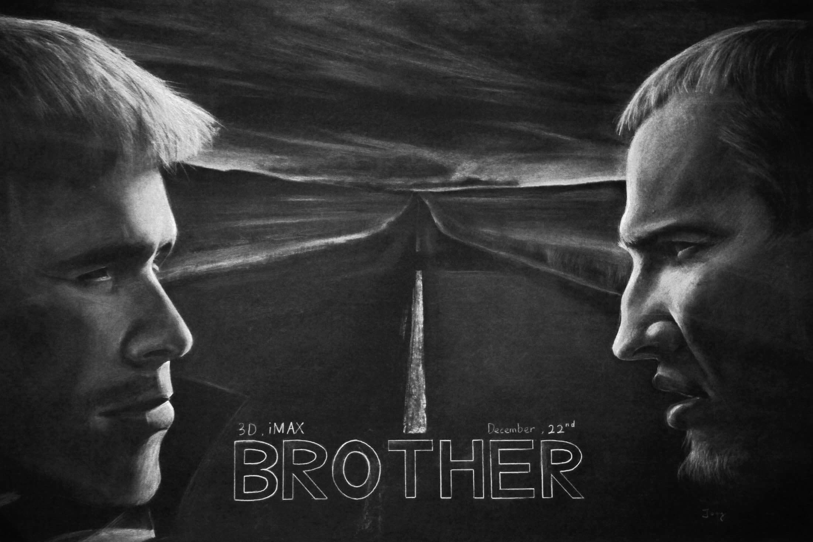
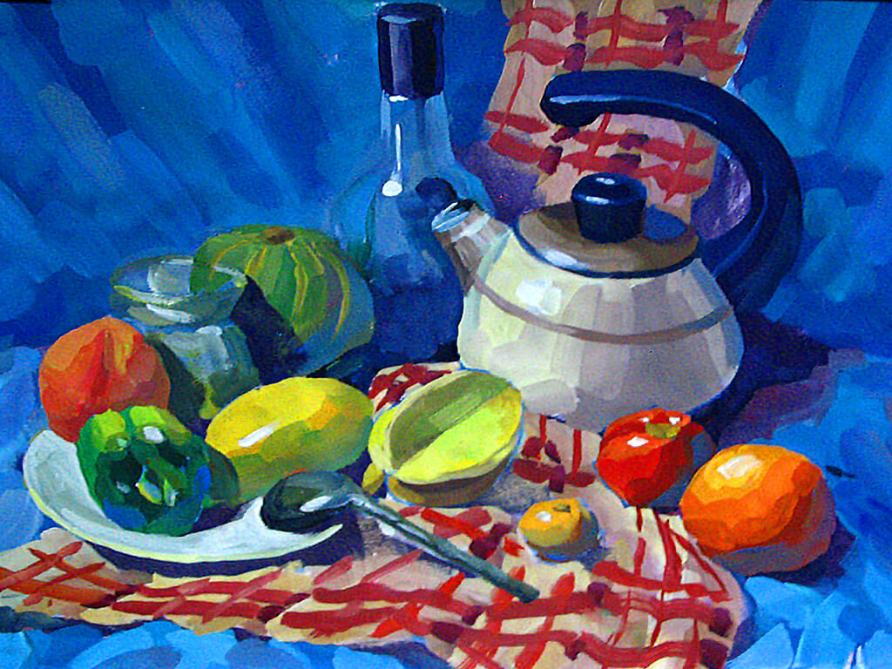
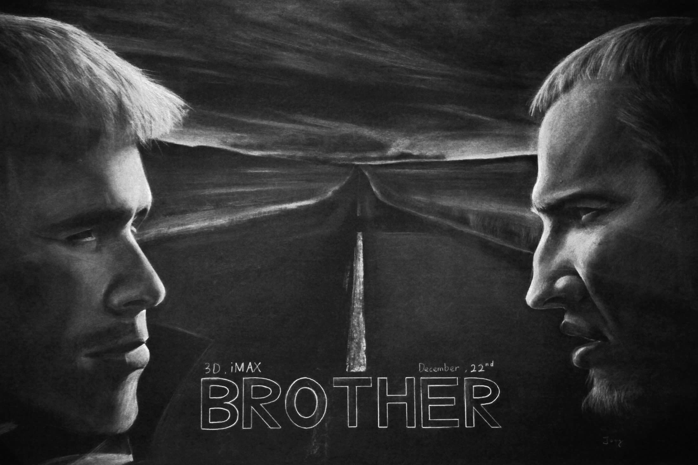
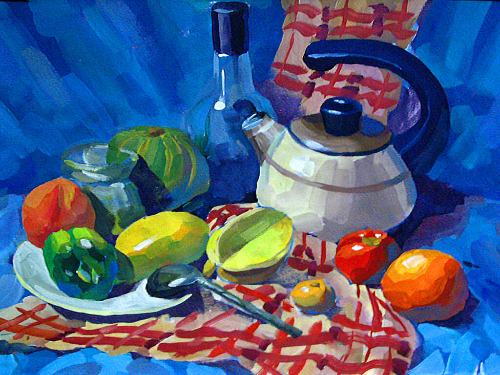
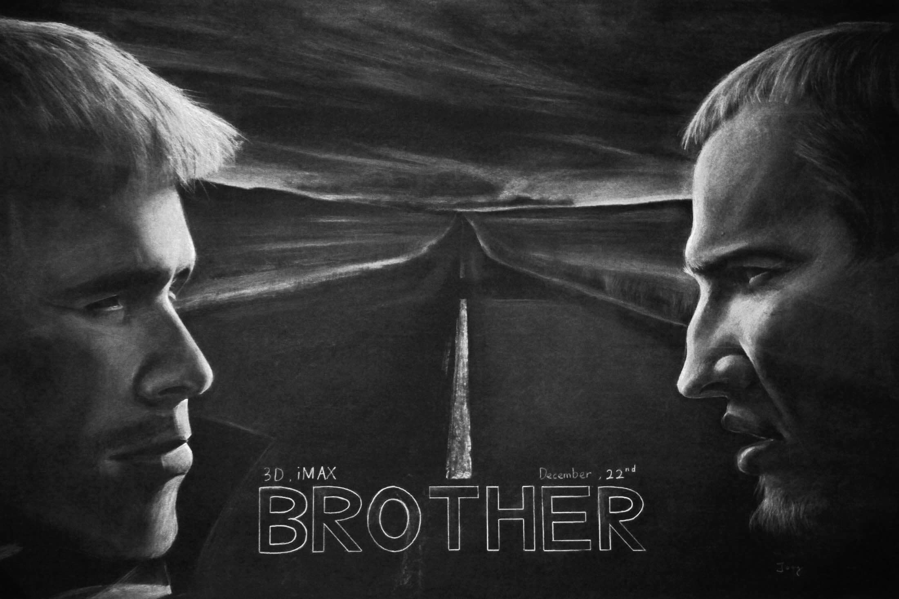
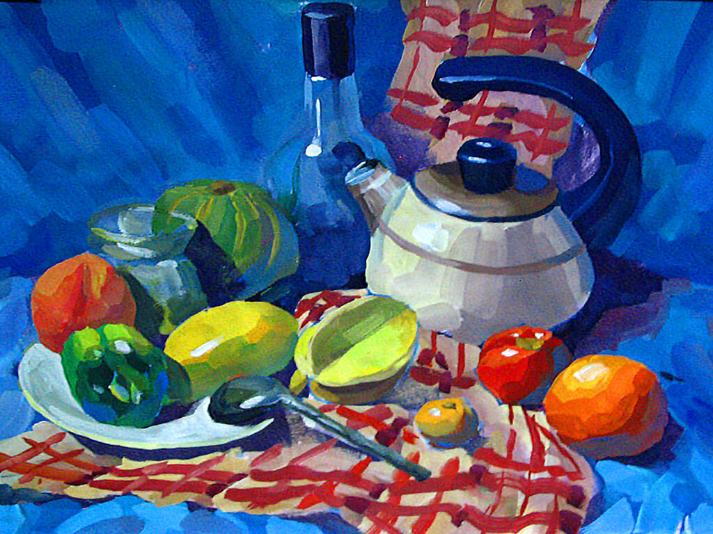

Unique Perspective
Life
"In the end, it's not the years in your life that count. It's the life in your years." --Abraham Lincoln
The most important things in life are -to be healthy, to be happy, and to be the one you want- those are all that matter. Life is short; memory is long. Health is essential of everything. Happiness is motivation of everything. To be the one you want is a journey, a life journey.
I try to capture unique perspectives in my life because I believe that everyone sees the world differently. I want to make these perspectives memorable, so I keep shooting, capturing, observing the world.

 




